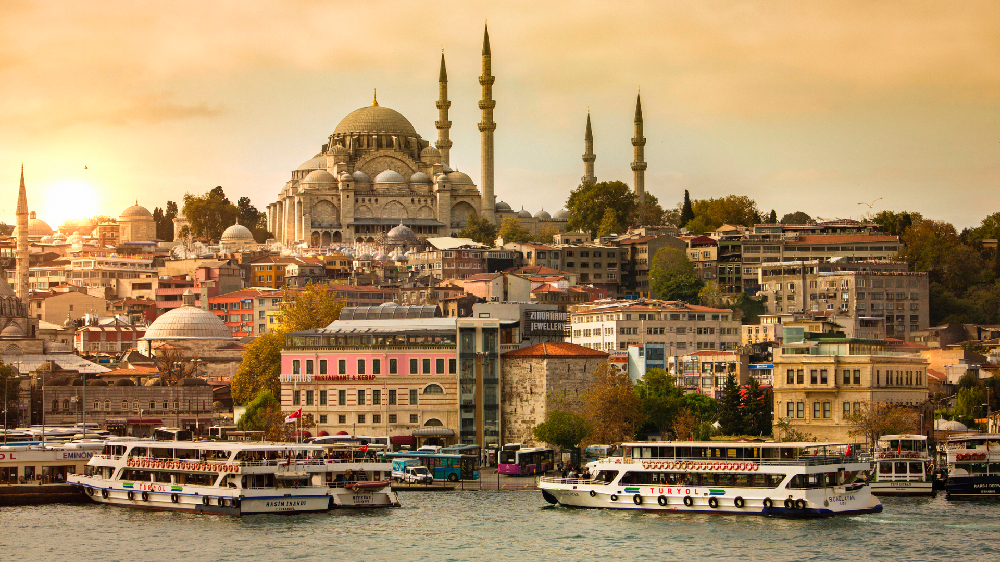

Istanbul, formerly known as Byzantium and Constantinople, is the most populous city in Turkey and the country's economic, cultural and historic center. Istanbul is a transcontinental city in Eurasia, straddling the Bosporus strait (which separates Europe and Asia) between the Sea of Marmara and the Black Sea. Its commercial and historical center lies on the European side and about a third of its population lives in suburbs on the Asian side of the Bosporus. With a total population of around fifteen million residents in its metropolitan area, Istanbul is one of the world's largest cities by population, ranking as the world's fifteenth-largest city and the largest city in Europe. The city is the administrative centre of the Istanbul Metropolitan Municipality (coterminous with Istanbul Province).
 HOME